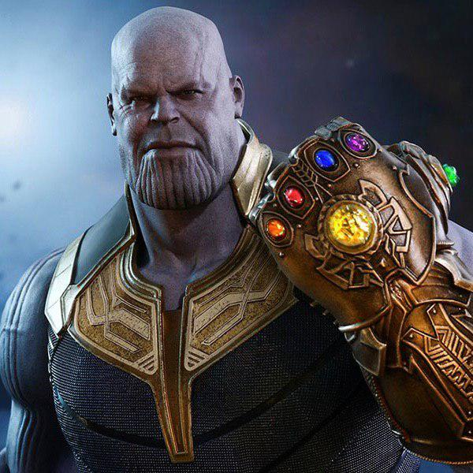

 Танос (англ. Thanos) — вигаданий антагоніст, що з'являється в американських коміксах, опублікованих Marvel Comics. Створений письменником Майком Фрідріхом та письменником-художником Джимом Старлін, персонаж вперше з'явився в коміксі «Залізна людина» #55 (обкладинка від лютого 1973 року). Цей персонаж з'являється у різних фільмах «Кінематографічний всесвіт Marvel», зокрема «Месники», зображених Деміоном Пуатьєром та «Вартові галактики», «Месники: Ера Альтрона», «Месники: Війна нескінченності» та його продовженням «Месники: Завершення» (2019), зображений Джошем Броліним. Цей персонаж з'явився в інших продуктах, підтримуваних Marvel, включаючи анімовані телевізійні серіали, аркади та відео ігри.
Письменник-художник Джим Старлін спочатку задумав про Таноса під час курсів психології в коледжу. Як сказав Старлін: «Я пішов у коледж між військовою службою США і роботою в коміксах. Існував психологічний клас, і я придумав Таноса […] і Дракс Руйнівник, але я не впевнений, як він підходить для цього, просто управління гнівом ймовірно. Тому я підійшов до Marvel і [редактор] Рой [Томас] запитав, чи хочу я зробити проблему Залізній людині. Я відчував, що це може бути моїм єдиним шансом зробити якогось персонажа, не маючи впевненості, що моя кар'єра буде тривати щось більше, ніж через кілька тижнів. І вони застрягли в ньому. Танос був набагато тоншим героєм, і Рой запропонував його наглушити, тому він зовсім трохи посилив його оригінальні ескізи […] і пізніше мені сподобалося настільки сильно підтягнути його, що він продовжував рости. Старлін визнав що Танос був створений під впливом Дарксайда Джек Кірбі: Кірбі зробив «Нових Богів», які, за моєю думкою, були приголомшливимі. У той час він перебрався в DC Comics. Я придумав деякі речі, які були натхненні цим. Ви думаєте, що Танос був натхненний Дарксайдом, але це не випадково. У моїх перших малюнках Таноса, якби він був схожий на будь-кого, це був Metron. У мене були всі ці різноманітні боги і те, що я хотів зробити, Таноса титаном. Рой подивився на хлопця в кріслі, подібному до Метрона, і сказав: «Яловичина його! Якщо ти збираєшся викрасти одного з Нових Богів, принаймні здирає Дарксайда, справді хорошого!» Перша поява Таноса була в «Залізна людина» #55 (лютий 1973), де була розповідь Джима Старліна, написана Майком Фрідріхом. Сюжетна лінія з цього питання продовжувалась через Captain Marvel #25-33 (два місяці: березень 1973 р. — січень 1974 р.), Marvel Feature #12 (листопад 1973 р.), Daredevil #107 (січень 1974 р.), The Avengers #125 Липень 1974 р.). Він повернувся в розгорнутому сюжетному рядку, який розкривав дивні казки #178—181 (лютий-серпень 1975 р.), Warlock 9-11 (жовтень 1975 р. — січень 1976 р.), Marvel Team Up # 55 (березень 1977 р.) Та 1977 р. «Однорічні плати за месників» і «Marvel Two-in-One»(Танос насправді не з'являється до кінця Warlock 9). Він також був представлений в короткій історії резервування в Logan's Run #6 (червень 1977) і мала невелику роль у графічному романі «Смерть капітана Марвела» (квітень 1982 р.).